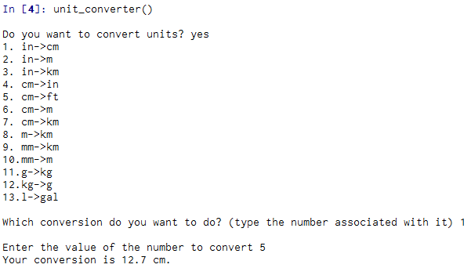
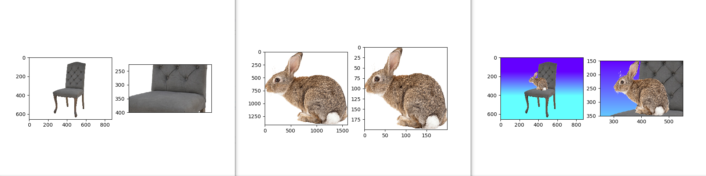
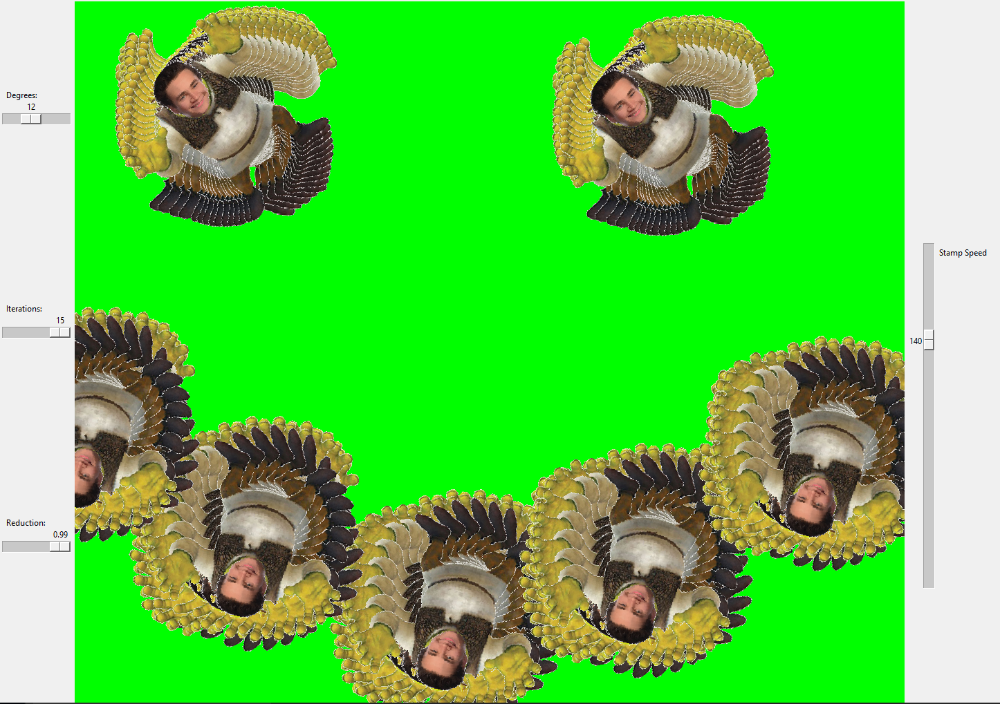
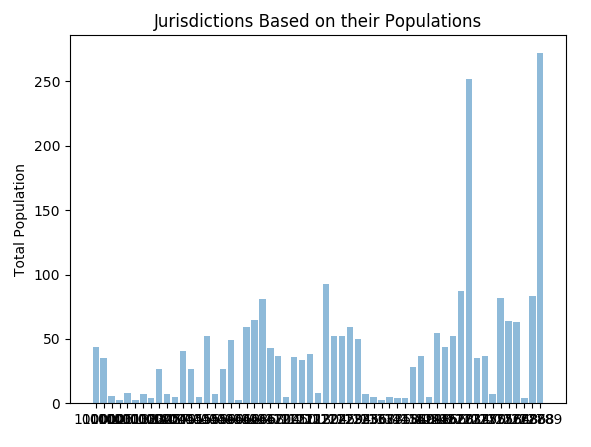
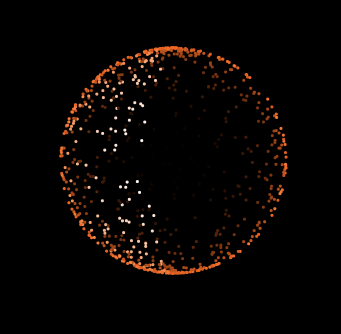

This is my Portfolio Page!


This is my Portfolio Page!

Kool Krab


With the abduction of your krab lover, find your way across the ocean floor to defeat the boss shark and ultimately reunite with your true love. Catch fish to move on to later levels, and harpoon the final boss to win! Click the image to navigate to the game on Scratch and play it yourself!
Tic Tac Toe

Using the MIT App Inventor, we were able to create the classic tic tac toe game. Play tic tac toe against your friends! Press the buttons to place your mark. First to get three in a row wins. The game detects each button press and counts off which player is pressing the button so it alternates between an "X" and an "O". Once a player has gotten three in a row, the game will tell you who won! To install the game, click the image and save the apk file to your computer. Install to your device, and you're ready to play!
Python: Monster Game
Navigate through the many paths to try to defeat a foul monster. Be careful, the decisions you make will determine if you live or die! Using Python, we created a game that leads to different outcomes based on your previous choices. Choosing to either run or hide will take you to completely different scenarios. Try it out yourself on this embedded version.
Python: Unit Converter
Using Canopy, our group has created a unit converter that will take the value you input and convert it from a set unit to another unit. After choosing from a set list of unit conversions, simply input whatever your numerical value is and it will display the new, converted value. The process continues on a loop until the user is finished. Click the image to download the Canopy file and try it out.
Python: Image
In this project, I edited an image using Python to change the background color of the image as well as putting a bunny in the chair. By resizing the bunny to be proportional to the chair, as well as finding the correct location to paste the bunny on to the chair image, I was able to create my new image. I also detected whenever the chair background was white, and changed the pixels that were white to a new color.
Python: GUI
Making changes to the existing code, I was able to make my own image of shrek appear instead of the scratch cat. The image I used was created by myself using other Python code. I also changed the background color and in my final product, I created a smiley face.
Python: Graph
Our question was whether or not the jurisdiction populations were evenly distributed. After finding data on jurisdictions based on their populations, we graphically displayed the breakdown of jurisdictions based on their total populations. We used a histogram to look at the different jurisdictions, and concluded that the jurisdictions were not distributed evenly.
NetLogo Project
We answered the question of whether or not it is possible to look inside a 3D animated object.